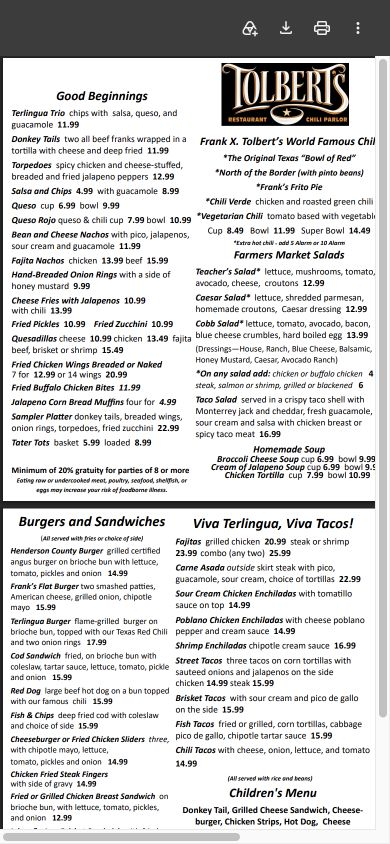
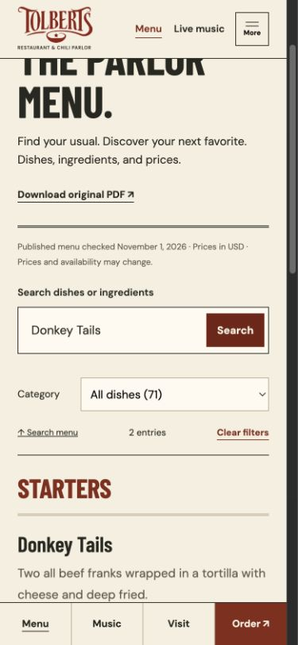

Show customers what they can eat, who’s playing, and how to visit. This redesign puts those answers near the front and gives people useful ways to choose, save, and share a plan.
DALLAS ROOTS, 1976.GRAPEVINE MAIN STREET, SINCE 2006.
01 / HOW IS THIS BETTER?
Five things guests can use.
Search the menu. Find a dish among 71 entries, with descriptions and prices on the page. The current Menu link opens a PDF.
See who’s playing today. The artist, photograph, and set time appear near the top of the homepage.
Choose a night. Filter shows by Tonight, This weekend, date, or artist and musical style.
Make a plan with friends. Share the exact show and download a calendar file.
Find the practical details. Hours, phone, and directions are prominent. Menu, music, visit details, and ordering stay available in the mobile action bar.
Try these features below. Changes in sales, attendance, and task speed have not yet been measured.
02 / WHY PAY FOR IT?
A launch your team can maintain.
Get the information right. Approve prices, ingredients, hours, show listings, and photography.
Make updates practical. Provide an agreed publishing workflow, then have a staff member make a real update.
Connect the business. Retain approved ordering and newsletter services, preserve analytics where access permits, and verify that inquiries reach the right inbox.
Launch and hand it over. Test the official domain and guest journeys; deliver source, agreed account access, instructions, and training.
Agree on scope, fee, and acceptance before the launch work. The management room demonstrates an interface; live inventory and supplier purchasing require a separate project.
DON’T TAKE THE PITCH ON FAITH
Try these three guest tasks.
Each link opens a working guest tool, ready for you to try.
01
FIND ONE DISH
How much are Donkey Tails, and what are they?
Current site: its Menu route redirects to a two-page PDF. The dish is present, but there is no website search or dish-level link.
Redesign: opens the full 71-entry web menu already filtered to Donkey Tails, with description, price, categories, clear-filters control, and the original PDF still available.
Current site: already publishes artists, dates, times, and images. Its event publishing remains a useful source to retain.
Redesign: reads the restaurant’s public event feed, filters to weekend shows, removes ended listings, states when the feed was checked, offers a dated saved lineup if live data is unavailable, and keeps the official calendar one tap away. Each show has a shareable link with menu, directions, seating calls, and a calendar reminder.
Current site: provides the full weekly hours, map, phone, and email near the bottom of the page.
Redesign: shows today’s posted hours and a seating phone number in the opening section. A persistent mobile Hours & location link leads to full hours, directions, parking, rail information, and calling; Order stays available alongside it.
Checked November 6, 2026: the official menu route, event feed, contact details, and weekly hours were reviewed again. The restaurant can update its pages at any time. The phone captures below are retained from the earlier November 2 comparison.
SAME TASK. PHONE-SIZE VIEW.
A menu should behave like a menu.
These phone-size captures show the same guest task. The redesign shows a Donkey Tails search result; the current Menu route opens its PDF. This is an interface comparison, not a timed test or conversion result.

Current official menuPhone-size view · PDF route

Working redesign menuPhone-size view · searchable HTML
RESPECT THE BUSINESS YOU’VE ALREADY BUILT
What the current site already gets right.
+
Owner-controlled infrastructure
The official domain, CMS, public event data, analytics, and structured business information are assets to migrate and improve—not discard.
+
An established ordering path
Keep SpotOn as the transactional destination unless the owners choose otherwise. The redesign makes the handoff clearer; it does not pretend to replace the ordering system.
+
Real Tolbert’s material
The family story, restaurant photography, video, reviews, Main Street location, and Chilihead Club carry credibility no invented campaign could improve.
+
Existing contact path
The official site includes contact forms plus direct phone/email details; this review did not test form delivery. The prototype inquiry only prepares an email draft and is not presented as superior.
WHAT A PAID ENGAGEMENT MUST DELIVER
From working proof to official website.
Set the scope and fee around deliverables the owners can inspect, test, and approve.
WorkstreamAcceptance criteria
Menu integrity
Owners approve one web menu against the current restaurant menu and SpotOn. Prices, ingredients, policy notes, and an update owner are documented; unresolved conflicts are flagged rather than guessed.
Live music
The approved CMS feed populates current shows in Central time, ended shows disappear, empty descriptions do not leak into the interface, and a tested official-calendar fallback remains available.
Critical mobile paths
At a 390px viewport, Menu, Live music, Hours & location, and Order are visible without opening the hamburger. Calls, directions, order handoffs, filters, Back/Forward state, and error states are tested.
Production migration
The official domain, approved URLs or redirects, analytics, contact delivery, newsletter, SpotOn links, metadata, and Restaurant/MusicVenue/Event structured data survive launch. Event time zones match the visible schedule.
Quality & handoff
Owner-approved claims and images; keyboard, screen-reader, reflow, reduced-motion, form, link, and real-device checks; a publishing runbook; and a named person trained to update hours, menu, and shows.
THE PROTOTYPE ALREADY DEMONSTRATES
A responsive, Tolbert-specific visual direction
A complete searchable web menu with prices
Task-first homepage and mobile navigation
Live-calendar parsing, freshness labels, filters, and fallback
Working calls, directions, order handoffs, and shareable menu states
PRODUCTION STILL REQUIRES
Owner access to and approval of the official systems
Menu and ordering-data reconciliation
Image permissions and final historical review
Domain, CMS, analytics, schema, and contact integration
Launch testing, staff handoff, and an agreed maintenance owner
This measurement is proposed; it is not installed and no results exist. With owner approval, record a pre-launch baseline and the first 30 days after production launch for menu views/searches, calendar views, directions, tap-to-call, order handoffs, and completed contact submissions. Review broken paths and task drop-offs alongside traffic mix and event timing.
Do not label every action incremental or attribute every order to the redesign. If the owners want a price-neutral planning check, the break-even count is project fee ÷ verified contribution margin per genuinely incremental completed action. Both inputs must come from the business; this proposal invents neither.
THE ASK
The next step is a scoped production engagement.
Walk through the three guest tasks, identify the team’s source of truth for menu, hours, and shows, and agree on the systems that must survive launch. That produces a priced scope for content reconciliation, integration, migration, verification, training, and support.